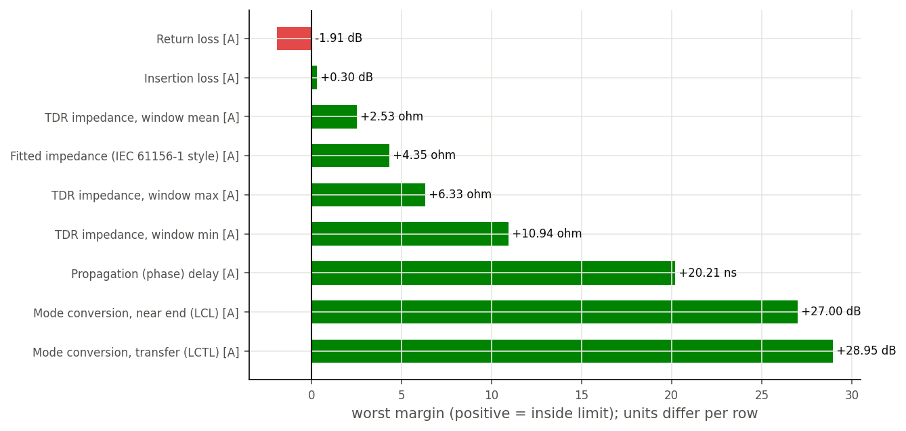

A
cablecheck
Measurement to engineering verdict

Removes the fixture, converts raw four-port data into the quantities engineers specify, and issues a verdict against the standard with the margin and the frequency where it was worst.
TakesTouchstone / VNA CSV, fixture description
Producesverdict · margins · IL RL LCL NEXT FEXT delay NVP Z(x) · report · database row